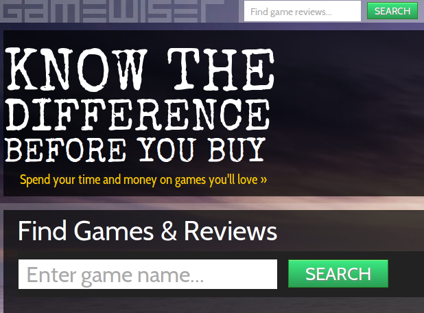
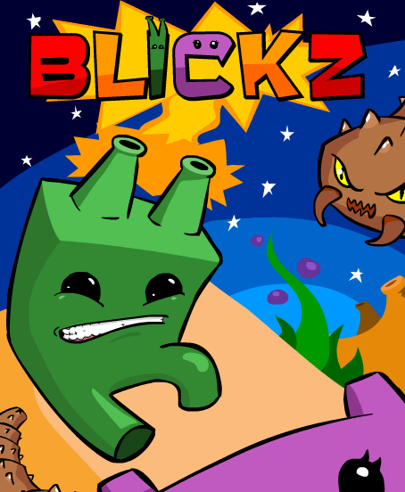
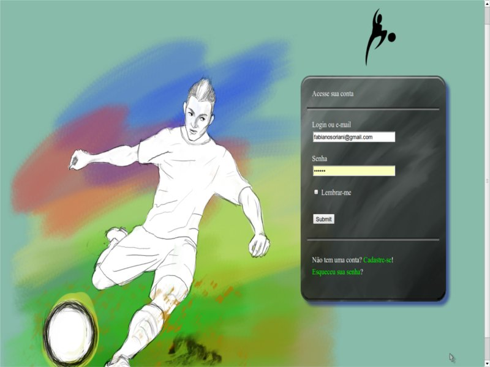
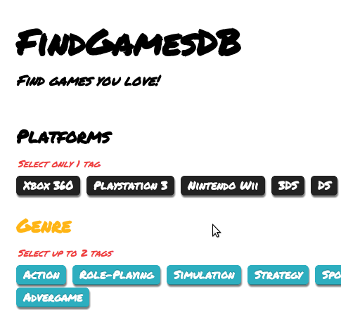
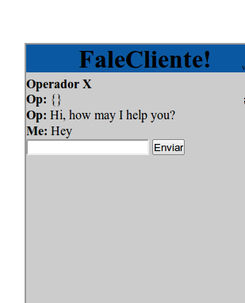
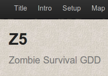
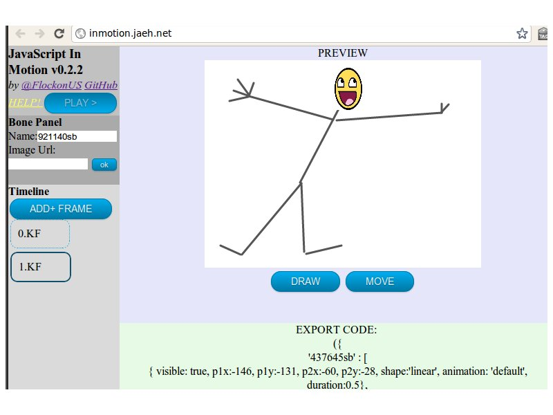

I am a developer , especialized in back-end and passionate for front-end state of art
Versed in Node.js, Ruby, MongoDB, SQL, jQuery, CSS, HTML5, SEO, UX
This website shows some of my most recent Portfolio , best displayed at most modern browsers
Consult my curriculum
Do a hard refresh to ensure you are viewing the lastest version of my website

Independent, user based, game review website.
Two man project, our focus is to create a better system to search and review games from several platforms.
Under development.
JavaScript
Node.js
jQuery
MongoDB
Extensive project aiming tracking player progress in training games.
Involved projecting and implementing a Node.js progress tracker, also generating reports and providing administrative interface.
Node.js
ActionScript3
MySQL

Developed (along a group) under 48 hours for the game marathon Global Game Jam!
We used AS3 as programming language and Flixel as framework.
Won regional awards for: innovative gameplay, fun. Second place for: audio, control, multiplayer and point sum.

Team of 3, an ambitious project aiming to create a F2P game where the player roleplayed the life of an ascending soccer player
The alpha had over 40 players, they spent an average of 3 min/day (browser mmo). The prototype is still up and running
Game
Ruby on Rails
Single Page Web App
jQuery

Inspired by Jinni, this was an attempt to create a new, efficent game search engine!
This project motivated me to work with a partner at GameWiser
Working prototype!
Ruby on Rails
MongoDB
jQuery

Real-time costumer support service via website, much inspired by Olark, targeting Brazilian audience
The prototype is currently on, it lives as a proof-of-concept

A zombie survival game design
Kind of game where collecting evidences, roleplaying smart, and managing well a small group of survivors are key factors for victory (along a fair share of luck)

A small HTML5 Canvas tween both editor and engine.
This was a hobby project started at 2010, back then my JS code quality was low.
The latest version is still up
I am currently available for hire in Vancouver-BC
Working with social web, game industry, startups, transportation or robotics have a very strong appeal for me.
For work opportunities please send me an e-mail via:
Fabiano Pereira Soriani : 778-989-5464